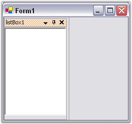
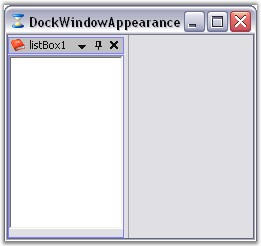
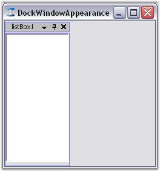
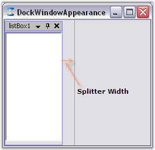
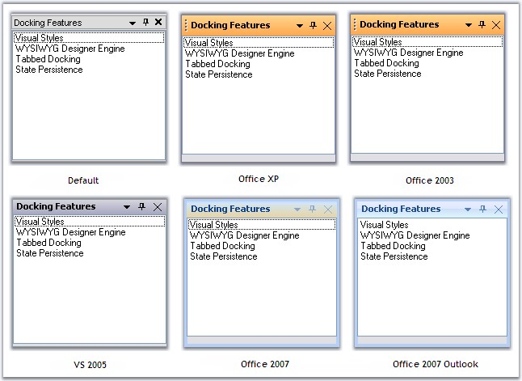
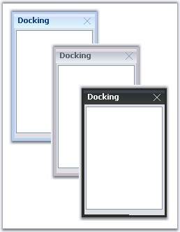
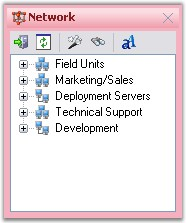
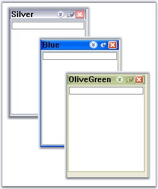

This section will discuss the background settings for the caption area of the docked controls.
Active Caption Settings
Caption background appearance for the active docked control can be controlled through ActiveCaptionBackground property.
|
DockingManager Property |
Description |
|
ActiveCaptionBackground |
Sets background for the caption area using BrushInfo object. |
 Note: This setting will effect only with
DockingManager.VisualStyle property set as Default.
Note: This setting will effect only with
DockingManager.VisualStyle property set as Default.
|
[C#]
this.dockingManager1.ActiveCaptionBackground = new Syncfusion.Drawing.BrushInfo(Syncfusion.Drawing.PatternStyle.Percent20, System.Drawing.SystemColors.InactiveCaptionText, System.Drawing.Color.FromArgb(((System.Byte)(255)), ((System.Byte)(224)), ((System.Byte)(192)))); |
|
[VB.NET]
Me.DockingManager1.ActiveCaptionBackground = New Syncfusion.Drawing.BrushInfo(Syncfusion.Drawing.PatternStyle.Percent20, System.Drawing.SystemColors.InactiveCaptionText, System.Drawing.Color.FromArgb(CType(255, Byte), CType(224, Byte), CType(192, Byte))) |

Figure 77: Caption Background = "PatternStyle"
InactiveCaption settings
By setting the InactiveCaptionBackground properties, the caption appearance of the inactive control in the docked controls can be customized.
|
DockingManager Property |
Description |
|
InactiveCaptionBackground |
Sets caption background of the inactive docked control using BrushInfo object. |
Note: This setting will effect only with
DockingManager.VisualStyle property set as Default.
|
[C#]
this.dockingManager1.InActiveCaptionBackground = new Syncfusion.Drawing.BrushInfo(Syncfusion.Drawing.GradientStyle.Horizontal, System.Drawing.Color.Ivory, System.Drawing.SystemColors.Control); |
|
[VB.NET]
Me.DockingManager1.InActiveCaptionBackground = New Syncfusion.Drawing.BrushInfo(Syncfusion.Drawing.GradientStyle.Horizontal, System.Drawing.Color.Ivory, System.Drawing.SystemColors.Control) |
See Also
Border color of the docked controls can be specified in the BorderColor property.
Note that you will have to enable PaintBorders property to effect this setting.
|
DockingManager Property |
Description |
|
BorderColor |
Used to set the border color for the docked control. |
|
Paint Borders |
Determines whether to paint the docked control's borders. |
|
[C#]
//Setting Border color this.dockingManager1.BorderColor = System.Drawing.Color.Blue; this.DockingManager1.PaintBorders = true; |
|
[VB.NET]
'Setting border color Me.DockingManager1.BorderColor = System.Drawing.Color.Blue Me.DockingManager1.PaintBorders = True |

Figure 78: Docked Window with BorderColor Set
HostFormClientBorder
|
DockingManager Property |
Description |
|
HostFormClientBorder |
Gets or sets a value indicating whether a border is drawn around the host form's client rectangle. |
|
[C#]
this.DockingManager1.HostFormClientBorder = false; |
|
[VB.NET]
Me.DockingManager1.HostFormClientBorder = False |

Figure 79: Docking Window without Border
The width of the splitter between the docking windows can be set by using the SplitterWidth property.
|
DockingManager Property |
Description |
|
SplitterWidth |
Gets or sets the value indicating the width of splitters between the docking window. |
|
[C#]
this.dockingManager1.SplitterWidth = 20; |
|
[VB.NET]
Me.dockingManager1.SplitterWidth = 20 |

Figure 80: SplitterWidth = "20"
Docking manager supports various styles that adds appealing visual styles to your application. Below are the visual styles implemented in docking.
· Default (VS 2003)
· OfficeXP
· Office 2003
· VS 2005
· Office 2007 (Blue, Silver, Black)
· Office 2007 outlook
Visual styles for the windows can be customized by using the below code snippet.
|
[C#]
//Set the visual Style of the docked controls this.dockingManager.VisualStyle = Syncfusion.Windows.Forms.VisualStyle.Office2003; |
|
[VB.NET]
' Set the visual Style of the docked controls Me.dockingManager.VisualStyle = Syncfusion.Windows.Forms.VisualStyle.Office2003 |

Figure 81: Visual Styles for Docking
Office2007 Color Schemes
DockingManager supports all the three color schemes in Office2007 visual style. This can be controlled using Office2007Theme property.
|
[C#]
this.dockingManager1.Office2007Theme = Syncfusion.Windows.Forms.Office2007Theme.Silver; |
|
[VB.NET]
Me.dockingManager1.Office2007Theme = Syncfusion.Windows.Forms.Office2007Theme.Silver |

Figure 82: Blue, Silver and Black Themes in Office2007 Visual Styles
Custom Color Schemes
Custom colors can also be applied DockingManager for Office2007 style, using the below code snippet.
|
[C#]
dockingManager1.Office2007Theme = Office2007Theme.Managed; Office2007Colors.ApplyManagedColors(this, Color.Red); |
|
[VB.NET]
dockingManager1.Office2007Theme = Office2007Theme.Managed; Office2007Colors.ApplyManagedColors(Me, Color.Red); |

Figure 83: CustomColor= "Red"
Windows Color Schemes
Windows color schemes like Blue, Silver and OliveGreen can be applied to the controls when Default or Office2003 styles are selected. XP themes can be enabled for the docked controls using ThemesEnabled property.
|
[C#]
this.dockingManager1.ThemesEnabled = true; |
|
[VB.NET]
Me.dockingManager1.ThemesEnabled = True |

Figure 84: VisualStyle= "Default"; ThemesEnabled control with Silver, Blue and OliveGreen Window Color Schemes
See Also
Foreground settings for Active and Inactive caption, Background settings for Active and Inactive caption